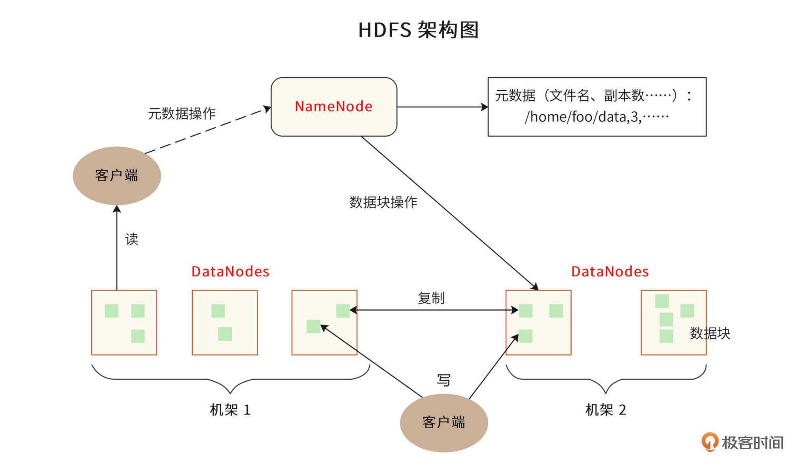
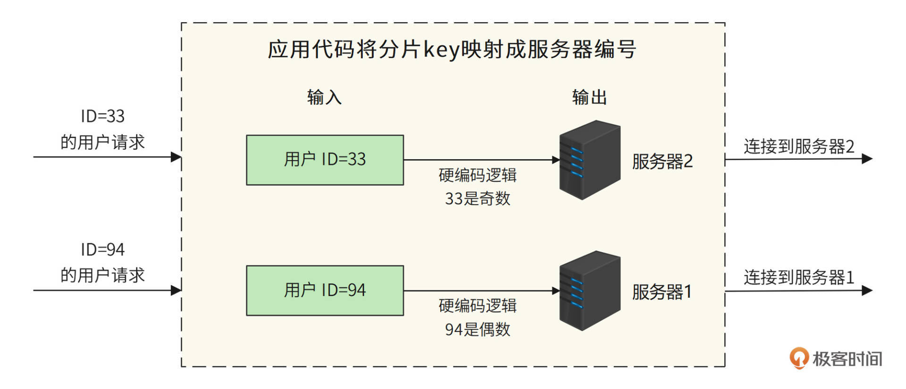
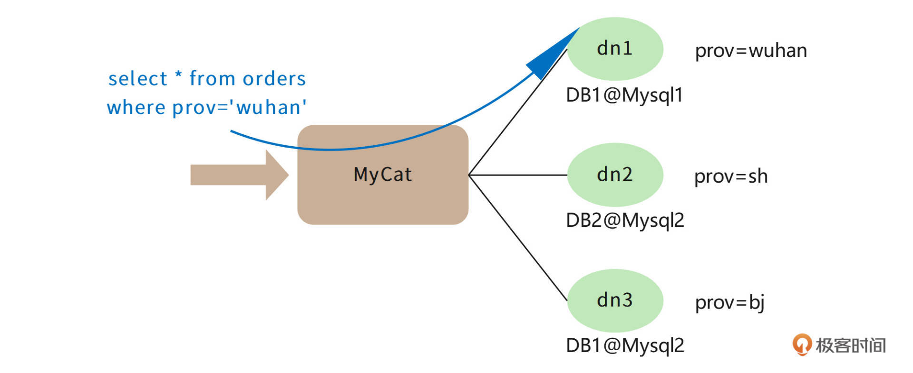
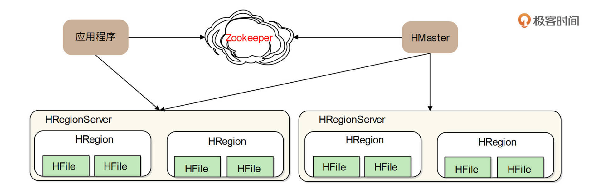
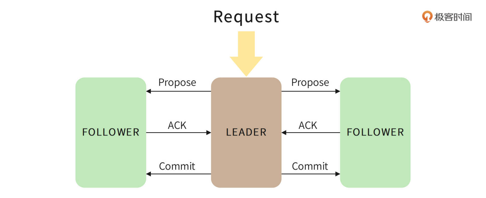
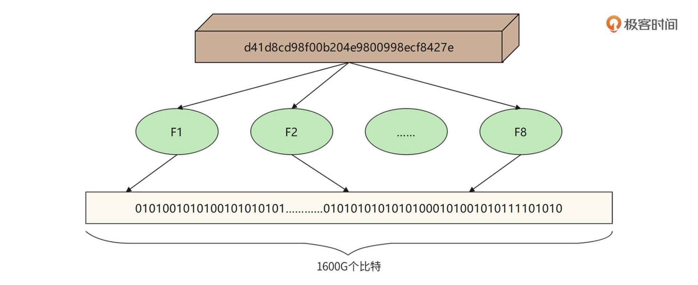

- 00 开篇词 “附身”大厂架构师，身临其境设计高并发系统.md.html
- 01 软件建模与文档：架构师怎样绘制系统架构蓝图？.md.html
- 02 高并发架构设计方法：面对高并发，怎么对症下药？.md.html
- 03 短 URL 生成器设计：百亿短 URL 怎样做到无冲突？.md.html
- 04 网页爬虫设计：如何下载千亿级网页？.md.html
- 05 网盘系统设计：万亿 GB 网盘如何实现秒传与限速？.md.html
- 06 短视频系统设计：如何支持三千万用户同时在线看视频？.md.html
- 07 海量数据处理技术回顾：为什么分布式会遇到 CAP 难题？.md.html
- 08 秒杀系统设计：你的系统可以应对万人抢购盛况吗？.md.html
- 09 交友系统设计：哪种地理空间邻近算法更快？.md.html
- 10 搜索引擎设计：信息搜索怎么避免大海捞针？.md.html
- 11 反应式编程框架设计：如何使方法调用无阻塞等待？.md.html
- 12 高性能架构的三板斧：分析系统性能问题从哪里入手？.md.html
- 13 微博系统设计：怎么应对热点事件的突发访问压力？.md.html
- 14 百科应用系统设计：机房被火烧了系统还能访问吗？.md.html
- 15 限流器设计：如何避免超预期的高并发压力压垮系统？.md.html
- 16 高可用架构的十种武器：怎么度量系统的可用性？.md.html
- 17 Web 应用防火墙：怎样拦截恶意用户的非法请求？.md.html
- 18 加解密服务平台：如何让敏感数据存储与传输更安全？.md.html
- 19 许可型区块链重构：无中心的区块链怎么做到可信任？.md.html
- 20 网约车系统设计：怎样设计一个日赚 5 亿的网约车系统？.md.html
- 21 网约车系统重构：如何用 DDD 重构网约车系统设计？.md.html
- 22 大数据平台设计：如何用数据为用户创造价值？.md.html
- 结束语 一个架构师的一天.md.html
- 捐赠
07 海量数据处理技术回顾：为什么分布式会遇到 CAP 难题？
你好，我是李智慧。
在这个模块的几个案例中，我们都需要处理海量的数据，需要用到海量的存储介质，其实海量数据本质上就是一种磁盘资源敏感的高并发场景。
我们说过，为了应对资源不足的问题，我们常采用水平伸缩，即分布式的方案。数据存储的分布式问题是所有分布式技术中最具挑战性的，因为相对于“无状态”（stateless）的计算逻辑（可执行程序），数据存储是“有状态”（stateful）的。无状态的计算逻辑可以在任何一台服务器执行而结果不会改变，但有状态的数据却意味着数据存储和计算资源的绑定：每一个数据都需要存储在特定的服务器上，如果再增加一台空的服务器，它没有数据，也就无法提供数据访问，无法实现伸缩。
数据存储的“有状态”特性还会带来其他问题：为了保证数据存储的可靠性，数据必须多备份存储，也就是说，同一个数据需要存储在多台服务器上。那么又如何保证多个备份的数据是一致的？
因此，海量数据存储的核心问题包括：如何利用分布式服务器集群实现海量数据的统一存储？如何正确选择服务器写入并读取数据？为了保证数据的高可用性，如何实现数据的多备份存储？数据多备份存储的时候，又如何保证数据的一致性？
为了解决这些问题，在这个模块的案例设计中，我们使用了多个典型的分布式存储技术方案：分布式文件系统HDFS、分布式NoSQL数据库HBase、分布式关系数据库。下面我们就来回顾这几个典型技术方案。你可以再重新审视一下，我们案例中的技术选型是否恰当，是否有改进的空间。
HDFS
这个模块中，我们用HDFS作为短URL、爬虫下载文件、短视频文件的存储方案。
HDFS，即Hadoop分布式文件系统，其架构如下。

HDFS的关键组件有两个，一个是NameNode，另一个是DataNode。
NameNode负责整个分布式文件系统的元数据管理，也就是文件路径名、访问权限、数据块ID、存储位置等信息。而DataNode负责文件数据的存储和读写操作，HDFS将文件数据分割成若干数据块（Block），每个DataNode存储一部分数据块，这样文件就分布存储在了整个HDFS服务器集群中。
HDFS集群会有很多台DataNode服务器（一般几百到几千不等），每台服务器配有数块硬盘，整个集群的存储容量大概在几PB到数百PB。通过这种方式，HDFS可以存储海量的文件数据。
HDFS为了保证数据的高可用，会将一个数据块复制为多份（缺省情况为3份），并将多份相同的数据块存储在不同的服务器上，甚至不同的机架上。这样当有硬盘损坏，或者某个DataNode服务器宕机，甚至某个交换机宕机，导致其存储的数据块不能访问的时候，客户端会查找其备份的数据块进行访问。
HDFS的典型应用场景是大数据计算，即使用MapReduce、Spark这样的计算框架来计算存储在HDFS上的数据。但是作为一个经典的分布式文件系统，我们也可以把HDFS用于海量文件数据的存储与访问，就像我们在这个模块的案例中那样。
分布式关系数据库
我们在[网盘案例]中，使用了分片的关系数据来存储元数据信息。这是因为关系数据存在存储结构的限制（使用B+树存储表数据），通常一张表的存储上限是几千万条记录。而在网盘的场景中，元数据在百亿以上，所以我们需要将数据分片存储。
分片的关系数据库，也被称为分布式关系数据库。也就是说，将一张表的数据分成若干片，其中每一片都包含了数据表中一部分的行记录，然后将每一片存储在不同的服务器上，这样一张表就存储在多台服务器上了。通过这种方式，每张表的记录数上限可以突破千万，保存百亿甚至更多的记录。
最简单的数据库分片存储可以采用硬编码的方式，我们在程序代码中直接指定把一条数据库记录存放在哪个服务器上。比如像下图这样，要将用户表分成两片，存储在两台服务器上，那么我们就可以在程序代码中根据用户ID进行分片计算，把ID为偶数（如94）的用户记录存储到服务器1，ID为奇数（如33）的用户记录存储到服务器2。

但是硬编码方式的缺点比较明显。如果要增加服务器，那么就必须修改分片逻辑代码，这样程序代码就会因为非业务需求产生不必要的变更；其次，分片逻辑会耦合在业务逻辑的程序代码中，修改分片逻辑或业务逻辑，都可能影响另一部分代码，从而出现Bug。
我们可以使用分布式关系数据库中间件来解决这个问题，在中间件中完成数据的分片逻辑，这样对应用程序是透明的。我们常用的分布式关系数据库中间件是MyCAT，原理如下图。

MyCAT是针对MySQL数据库设计的，应用程序可以像使用MySQL数据库一样连接MYCAT，提交SQL命令。MyCAT在收到SQL命令以后，查找配置的分片逻辑规则。
比如上图中，我根据地区进行数据分片，把不同地区的订单存储在不同的数据库服务器上。那么MyCAT就可以解析出SQL中的地区字段prov，根据这个字段连接相对应的数据库服务器。例子中SQL的地区字段是“wuhan”，而在MyCAT中配置“wuhan”对应的数据库服务器是dn1，所以用户提交的这条SQL最终会被发送给DB1@Mysql1数据库进行处理。
HBase
分布式关系数据库可以解决海量数据的存储与访问，但是关系数据库本身并不是分布式的，需要通过中间件或者硬编码的方式进行分片，这样对开发和运维并不友好，于是人们又设计出了一系列天然就是分布式的数据存储系统。因为这些数据存储系统通常不支持关系数据库的SQL语法，所以它们也被称为NoSQL数据库。
HBase就是NoSQL数据库中较为知名的一个产品。我们的短URL数据存储、短视频缩略图存储都使用了HBase作为存储方案。上面网盘元数据存储方案使用了分布式关系数据库，事实上，使用HBase这样的NoSQL数据库会是更好的方案。HBase架构如下。

HRegion是HBase中负责数据存储的主要进程，应用程序对数据的读写操作都是通过和HRetion通信完成的。也就是说，应用程序如果想要访问一个数据，必须先找到HRegion，然后将数据读写操作提交给HRegion，而HRegion最终将数据存储到HDFS文件系统中。由于HDFS是分布式、高可用的，所以HBase的数据存储天然是分布式、高可用的。
因此HBase的设计重点就是HRegion的分布式。HRegionServer是物理服务器，这些服务器构成一个分布式集群，每个HRegionServer上可以启动多个HRegion实例。当一个 HRegion中写入的数据太多，达到配置的阈值时，一个HRegion会分裂成两个HRegion，并将HRegion在整个集群中进行迁移，以使HRegionServer的负载均衡，进而实现HRegion的分布式。
应用程序如果想查找数据记录，需要使用数据的key。每个HRegion中存储一段Key值区间[key1, key2)的数据，而所有HRegion的信息，包括存储的Key值区间、所在HRegionServer地址、访问端口号等，都记录在HMaster服务器上。因此，应用程序要先访问HMaster服务器，得到数据key所在的HRegion信息，再访问对应的HRegion获取数据。为了保证HMaster的高可用，HBase会启动多个HMaster，并通过ZooKeeper选举出一个主服务器。
ZooKeeper
我们在上面提到，分布式数据存储为了保证高可用，需要对数据进行多备份存储，但是多份数据之间可能无法保证数据的一致性，这就是著名的CAP原理。
CAP原理认为，一个提供数据服务的分布式系统无法同时满足数据一致性（Consistency）、可用性（Availibility）、分区耐受性（Patition Tolerance）这三个条件，如下图所示。
其中，一致性的意思是，每次读取数据，要么读取到最近写入的数据，要么返回一个错误，而不是过期数据，这样就能保证数据一致。
可用性的意思是，每次请求都应该得到一个响应，而不是返回一个错误或者失去响应，不过这个响应不需要保证数据是最近写入的。也就是说，系统需要一直都能正常使用，不会引起调用者的异常，但是并不保证响应的数据是最新的。
分区耐受性的意思是，即使因为网络原因，部分服务器节点之间消息丢失或者延迟了，系统依然应该是可以操作的。
当网络分区失效发生时，要么我们取消操作，保证数据一致性，但是系统却不可用；要么我们继续写入数据，但是数据的一致性就得不到保证。
对于一个分布式系统而言，网络失效一定会发生，也就是说，分区耐受性是必须要保证的，那么可用性和一致性就只能二选一，这就是CAP原理。
由于互联网对高可用的追求，大多数分布式存储系统选择可用性，而放松对一致性的要求。而ZooKeeper则是一个保证数据一致性的分布式系统，它主要通过一个ZAB算法（Zookeeper Atomic Broadcast， Zookeeper原子广播）实现数据一致性，算法过程如下。

ZooKeeper集群由多台服务器组成，为了保证多台服务器上存储的数据是一致的，ZAB需要在这些服务器中选举一个Leader，所有的写请求都必须提交给Leader。Leader服务器会向其他服务器（Follower）发起Propose，通知所有服务器：“我们要完成一个写操作请求，请大家检查自己的数据状态是否有问题。”
如果所有Follower服务器都回复Leader服务器ACK，即没有问题，那么Leader服务器会向所有Follower发送Commit命令，要求所有服务器完成写操作。这样包括Leader服务器在内的所有ZooKeeper集群服务器的数据，就都更新并保持一致了。如果有两个客户端程序同时请求修改同一个数据，因为必须要经过Leader的审核，而Leader只接受其中一个请求，数据也会保持一致。
在实际应用中，客户端程序可以连接任意一个Follower，进行数据读写操作。如果是写操作，那么这个请求会被Follower发送给Leader，进行如上所述的处理；如果是读操作，因为所有服务器的数据都是一致的，那么这个Follower直接把自己本地的数据返回给客户端就可以了。
因为ZooKeeper具有这样的特性，所以很多分布式系统都使用ZooKeeper选择主服务器。为了保证系统高可用，像HDFS中的NameNode，或者HBase中的HMaste都需要主主热备，也就是多台服务器充当主服务器，这样任何一台主服务器宕机，都不会影响系统的可用性。
但是在运行期，只能有一台主服务器提供服务，否则系统就不知道该接受哪台服务器的指令，即出现所谓的系统脑裂，因此系统需要选举主服务器。而ZooKeeper的数据一致性特点可以保证只有一台服务器选举成功。在专栏后面的网约车架构案例中，我们也使用了ZooKeeper进行服务器管理。
布隆过滤器
我们在[短URL生成]以及[网络爬虫的案例]中，还使用了布隆过滤器检查内容是否重复，即检查短URL或者网页内容的MD5是否已经存在。如果用Hash表检查重复，千亿级的网页内容MD5就需要一个非常大的Hash表，内存资源消耗非常大。而用布隆过滤器，使用较小的内存就可以检查海量数据中一个数据是否存在。文件MD5重复性检查的布隆过滤器原理如下。

布隆过滤器首先开辟一块巨大的连续内存空间，比如开辟一个 1600G 比特的连续内存空间，也就是 200GB 大的一个内存空间，并将这个空间所有比特位都设置为 0。然后对每个MD5使用多种Hash算法，比如使用 8 种Hash算法，分别计算 8 个Hash值，并保证每个Hash值是落在这个 1600G 的空间里的，也就是，每个 Hash 值对应 1600G 空间里的一个地址下标。然后根据计算出来的Hash值将对应的地址空间里的比特值设为 1，这样一个MD5就可以将8个比特位设置为 1。
如果要检查一个MD5是否存在，只需要让MD5重复使用这 8 个哈希算法，计算出8个地址下标，然后检查它们里面的二进制数是否全是 1，如果是 ，那么表示这个MD5已经存在了。所以，在海量MD5中检查一个MD5是否存在，布隆过滤器会比哈希表更节约内存空间。
小结
因为数据存储是有状态的，所以海量数据存储的分布式架构要解决的核心问题就是：在一个有很多台服务器的分布式集群中，如何知道数据存储在哪台服务器上？
解决方案有两种，一种是有专门的服务器记录数据存储在哪里，即有一个元数据服务器。HDFS里的NameNode和HBase里的HMaster都是这样的角色。应用程序想访问数据，需要先和元数据服务器通信，获取数据存储的位置，再去具体的数据存储服务器上访问数据。
另一种解决方案是通过某种算法计算要访问的数据的位置，这种算法被称作数据路由算法。分片数据库的硬编码算法就是一种数据路由算法，根据分片键计算该记录在哪台服务器上。MyCAT其实也是采用路由算法，只不过将硬编码的分片逻辑记录在了配置文件中。
软件开发技术是一个快速发展的领域，各种新技术层出不穷，如果你只是被动地学习这些技术，很快就会迷失在各种技术细节里，疲惫不堪，最终放弃。事实上，每种技术的出现都因为要解决某个核心问题，最终诞生几种解决方案。同时，每种方案又会产生自己的新问题，比如分布式存储的数据的高可用，以及高可用带来的数据一致性，又需要产生相应的解决方案。
但是只要把握住核心问题和解决方案，就可以自己分析、推导各种衍生的问题和方案，思考各种优缺点和改进策略，最终理解、掌握一个新的技术门类。这不是通过辛苦学习，来掌握一个技术，而是从上帝视角，站在和这些技术的创造者一样的维度去思考，最终内化到自己的知识体系中。
思考题
分布式存储中有个非常著名的数据路由算法，叫一致性Hash算法，这个算法要解决的问题是什么？解决的思路是什么？
欢迎在评论区分享你的思考，我们共同进步。
© 2019 - 2023 Liangliang Lee. Powered by gin and hexo-theme-book.